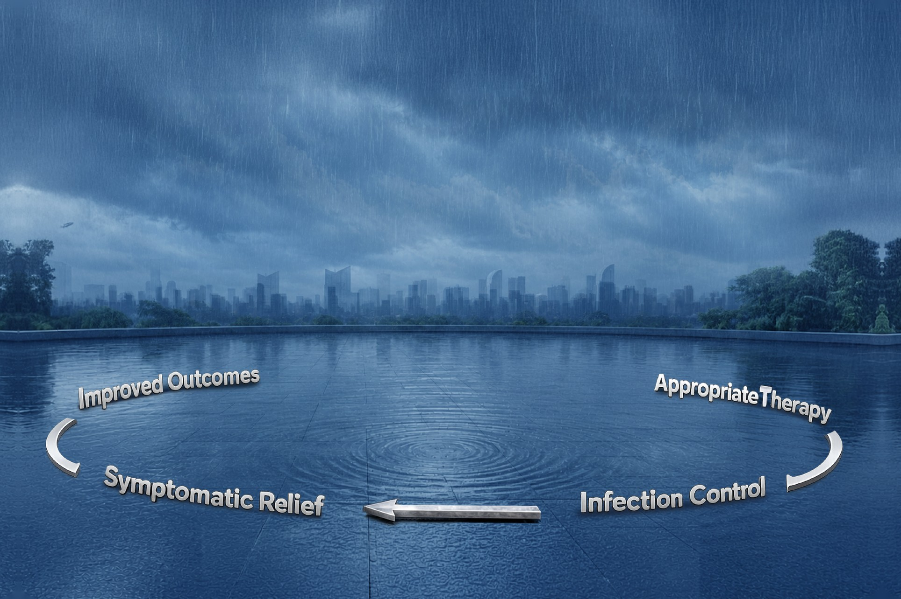

This Monsoon,create the
Ripple of recovery
Improved tissue penetration
in RTIs
4,*
High stability in the presence of
β
-lactamase-producing strains
5
Guideline-backed use
in RTIs
6-8
Legacy you can rely on!
with
3
3
2
2
Fictional image, for illustrative purposes only.
*In a cross sectional, questionnaire-based survey among physicians involved in managing RTIs and otitis media across India from June 2022 to December 2022, nearly 62% of clinicians opined that Cefuroxime has improved tissue penetration compared to other broad-spectrum antibiotics.4
RTIs: Respiratory tract infections.
*In a cross sectional, questionnaire-based survey among physicians involved in managing RTIs and otitis media across India from June 2022 to December 2022, nearly 62% of clinicians opined that Cefuroxime has improved tissue penetration compared to other broad-spectrum antibiotics.4
RTIs: Respiratory tract infections.